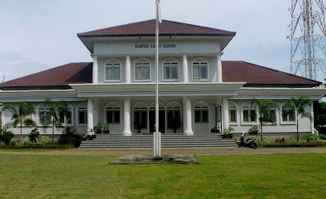

<!DOCTYPE html>
<html lang="en">
<head>
    <meta charset="UTF-8">
    <meta name="viewport" content="width=device-width, initial-scale=1.0">
    <title>LOMBOK BARAT</title>
    <link rel="stylesheet" href="assets/leaflet.css">
    <link rel="stylesheet" href="https://unpkg.com/leaflet.markercluster@1.4.1/dist/MarkerCluster.css" />
    <link rel="stylesheet" href="https://unpkg.com/leaflet.markercluster@1.4.1/dist/MarkerCluster.Default.css" />
    <link rel="stylesheet" href="https://cdnjs.cloudflare.com/ajax/libs/font-awesome/5.15.4/css/all.min.css" />
    <script src="assets/leaflet.js"></script>
    <script src="lobar_art.js"></script>
    <script src="lobar_line.js"></script>
<style>
    #map {
            height: 100vh;
        }
        .leaflet-control-custom-group {
            display: flex;
            flex-direction: column;
            background-color: white;
            padding: 5px;
            box-shadow: 0 0 10px rgba(0, 0, 0, 0.2);
        }
        .leaflet-control-custom {
            margin: 0;
            padding: 10px;
            cursor: pointer;
            text-align: center;
            background-color: #fff;
            border: 1px solid #ccc;
        }
        .leaflet-control-custom i {
            font-size: 20px;
        }
        /* Remove spacing between buttons */
        .leaflet-control-custom-group .leaflet-control-custom + .leaflet-control-custom {
            border-top: none;
        }
    body,html{
        padding: 0px;
        margin: 0px;
        height: 100%;
    }
</style>
</head>
<body>
    <div id="map"></div>
        <script src="https://unpkg.com/leaflet@1.7.1/dist/leaflet.js"></script>
        <script src="https://unpkg.com/leaflet.markercluster@1.4.1/dist/leaflet.markercluster.js"></script>  
    <script>

var leafIcon = L.Icon.extend({
    options: {
        iconSize : [50,50],
        iconAnchor : [22,34],
        popupAnchor : [-3,-36],
    }
});
//layer group untuk pembatasa area
        var kab_lobars = L.layerGroup();
        var gerungs = L.layerGroup();
        var batu_layars = L.layerGroup();
        var gunung_saris = L.layerGroup();
        var kediris = L.layerGroup();
        var kuripans = L.layerGroup();
        var labu_apis = L.layerGroup();
        var lembars = L.layerGroup();
        var lingsars = L.layerGroup();
        var narmadas = L.layerGroup();
        var sekotongs = L.layerGroup();

        L.geoJSON(kab_lobar, {
        style: function (feature) {
            return {
                color: "#ffff00", 
                weight: 2,
                opacity: 1,
                fillOpacity: 0.7
            };
        },
        onEachFeature: function (feature, layer) {
            if (feature.properties && feature.properties.name) {
                layer.bindPopup(feature.properties.name);
            }
        }
    }).addTo(kab_lobars);

        L.geoJSON(gerung, {
        style: function (feature) {
            return {
                color: "#000000", 
                weight: 2,
                opacity: 1,
                fillOpacity: 0.7
            };
        },
        onEachFeature: function (feature, layer) {
            if (feature.properties && feature.properties.name) {
                layer.bindPopup(feature.properties.name);
            }
        }
    }).addTo(gerungs);
        
        L.geoJSON(batu_layar, {
        style: function (feature) {
            return {
                color: "#000000", 
                weight: 2,
                opacity: 1,
                fillOpacity: 0.7
            };
        },
        onEachFeature: function (feature, layer) {
            if (feature.properties && feature.properties.name) {
                layer.bindPopup(feature.properties.name);
            }
        }
    }).addTo(batu_layars);
        
        L.geoJSON(gunung_sari, {
        style: function (feature) {
            return {
                color: "#000000", 
                weight: 2,
                opacity: 1,
                fillOpacity: 0.7
            };
        },
        onEachFeature: function (feature, layer) {
            if (feature.properties && feature.properties.name) {
                layer.bindPopup(feature.properties.name);
            }
        }
    }).addTo(gunung_saris);
        
        L.geoJSON(kediri, {
        style: function (feature) {
            return {
                color: "#000000", 
                weight: 2,
                opacity: 1,
                fillOpacity: 0.7
            };
        },
        onEachFeature: function (feature, layer) {
            if (feature.properties && feature.properties.name) {
                layer.bindPopup(feature.properties.name);
            }
        }
    }).addTo(kediris);
        
        L.geoJSON(kuripan, {
        style: function (feature) {
            return {
                color: "#000000", 
                weight: 2,
                opacity: 1,
                fillOpacity: 0.7
            };
        },
        onEachFeature: function (feature, layer) {
            if (feature.properties && feature.properties.name) {
                layer.bindPopup(feature.properties.name);
            }
        }
    }).addTo(kuripans);
        
        L.geoJSON(labu_api, {
        style: function (feature) {
            return {
                color: "#000000", 
                weight: 2,
                opacity: 1,
                fillOpacity: 0.7
            };
        },
        onEachFeature: function (feature, layer) {
            if (feature.properties && feature.properties.name) {
                layer.bindPopup(feature.properties.name);
            }
        }
    }).addTo(labu_apis);
        
        L.geoJSON(lembar, {
        style: function (feature) {
            return {
                color: "#000000", 
                weight: 2,
                opacity: 1,
                fillOpacity: 0.7
            };
        },
        onEachFeature: function (feature, layer) {
            if (feature.properties && feature.properties.name) {
                layer.bindPopup(feature.properties.name);
            }
        }
    }).addTo(lembars);

    L.geoJSON(lingsar, {
        style: function (feature) {
            return {
                color: "#000000", 
                weight: 2,
                opacity: 1,
                fillOpacity: 0.7
            };
        },
        onEachFeature: function (feature, layer) {
            if (feature.properties && feature.properties.name) {
                layer.bindPopup(feature.properties.name);
            }
        }
    }).addTo(lingsars);

    L.geoJSON(narmada, {
        style: function (feature) {
            return {
                color: "#000000", 
                weight: 2,
                opacity: 1,
                fillOpacity: 0.7
            };
        },
        onEachFeature: function (feature, layer) {
            if (feature.properties && feature.properties.name) {
                layer.bindPopup(feature.properties.name);
            }
        }
    }).addTo(narmadas);

    L.geoJSON(sekotong, {
        style: function (feature) {
            return {
                color: "#000000", 
                weight: 2,
                opacity: 1,
                fillOpacity: 0.7
            };
        },
        onEachFeature: function (feature, layer) {
            if (feature.properties && feature.properties.name) {
                layer.bindPopup(feature.properties.name);
            }
        }
    }).addTo(sekotongs);

var CamatIcon= new leafIcon({iconUrl: 'assets/images/icon_pemerintah.jpg'}),
    KeamananIcon= new leafIcon({iconUrl: 'assets/images/icon_polisi.jpg'}),
    KesehatanIcon= new leafIcon({iconUrl: 'assets/images/icon_kesehatan.jpg'}),
    WisataIcon= new leafIcon({iconUrl: 'assets/images/icon_wisata.jpg'}),
    SekolahIcon= new leafIcon({iconUrl: 'assets/images/icon_sekolah.jpg'});
    
    //kecamatan
    var camat_gerung = L.marker([-8.682237573593493, 116.1247731019701],{icon: CamatIcon }).bindPopup(' <br><b>camat gerung</b>')
    .on("mouseover", function(e) {
        this.openPopup()
    })
    .on("mouseout", function(e) {
        this.Popup()
    });

    //maker kecamatan
    var camat_batu_Layar = L.marker([-8.525068795977502, 116.06724469771781], {icon:CamatIcon}).bindPopup('<b>Kantor Camat batu layar</b>'),
        camat_gunung_sari = L.marker([-8.54010489534115, 116.10080277498133], {icon:CamatIcon}).bindPopup('<b>Kantor Camat gunung sari</b>'),
        camat_kediri = L.marker([-8.634857697479756, 116.14993149402198], {icon:CamatIcon}).bindPopup('<b>Kantor Camat kediri</b>'),
        camat_kuripan = L.marker([-8.669848741668018, 116.16986603450272], {icon:CamatIcon}).bindPopup('<b>Kantor Camat kuripan</b>'),
        camat_labu_api= L.marker([-8.635530290520993, 116.12341555964042], {icon:CamatIcon}).bindPopup('<b>Kantor Camat labu api</b>'),
        camat_lembar = L.marker([-8.720868719402247, 116.08275189217464], {icon:CamatIcon}).bindPopup('<b>Kantor Camat lembar</b>'),
        camat_lingsar = L.marker([-8.573130485551289, 116.18274000326461], {icon:CamatIcon}).bindPopup('<b>Kantor Camat lingsar</b>'),
        camat_narmada = L.marker([-8.590240072783681, 116.2028937823765], {icon:CamatIcon}).bindPopup('<b>Kantor Camat narmada</b>'),
        camat_sekotong = L.marker([-8.77743406260766, 116.04830659956988], {icon:CamatIcon}).bindPopup('<b>Kantor Camat sekotong</b>')
    var kecamatan = L.layerGroup([camat_gerung,camat_labu_api,camat_batu_Layar,camat_gunung_sari,camat_kediri,camat_kuripan,camat_lembar,camat_lingsar,camat_narmada,camat_sekotong]);

    //maker keamanan
        //keamana gerung
    var polisi_gerung1 = L.marker([-8.682793663031184, 116.12697511925015], {icon: KeamananIcon}).bindPopup('<b>Polsek Gerung</b>'),
        polisi_gerung2 = L.marker([-8.682319968400739, 116.127792553924], {icon: KeamananIcon}).bindPopup('<b>Sektor Gerung</b>'),
        polisi_gerung3 = L.marker([-8.664331949914954, 116.13341446373893], {icon:KeamananIcon}).bindPopup('<b>Pos Polisi GMS</b>'),
        polisi_gerung4 = L.marker([-8.664756205550086, 116.13620396097534], {icon: KeamananIcon}).bindPopup('<b>Pos Polisi Lalulintas</b>'),

        //keamanan batu layar
        polisi_batu_layar1 = L.marker([-8.49218633417714, 116.0507248839334], {icon: KeamananIcon}).bindPopup('<b>Polsek Senggigi</b>'),
        polisi_batu_layar2 = L.marker([-8.492865450697382, 116.03888024951416], {icon: KeamananIcon}).bindPopup('<b>Pol Transit Damri</b>'),

        //keamanan gunung sari
        polisi_gunung_sari1 = L.marker([-8.539140924702037, 116.09870633856242], {icon: KeamananIcon}).bindPopup('<b>Polsek Gunung Sari</b>'),
        polisi_gunung_sari2 = L.marker([-8.539819957892437, 116.09883508458871], {icon: KeamananIcon}).bindPopup('<b>Polsek baru Gunung Sari</b>'),

        //keamanan kediri
        polisi_kediri1 = L.marker([-8.64359697390567, 116.1278918849075], {icon:  KeamananIcon}).bindPopup('<b>Pos polisi</b>'),
        polisi_kediri2 = L.marker([-8.63536586674161, 116.14952121732523], {icon:  KeamananIcon}).bindPopup('<b>POLSEK Kediri</b>'),
        polisi_kediri3 = L.marker([-8.632904985391505, 116.15123783100918], {icon:  KeamananIcon}).bindPopup('<b>KantorPolisi Sipil</b>'),
             
        //keamanan kuripan
        polisi_kuripan1 = L.marker([-8.670988296654071, 116.1681338589653], {icon: KeamananIcon}).bindPopup('<b>Polsek Kuripan</b>'),
        polisi_kuripan2 = L.marker([-8.673618627283105, 116.16603100720249], {icon: KeamananIcon}).bindPopup('<b>kantor polisi sektor kuripan</b>'),
               
        //keamanan labuapi
        polisi_labu_api1 = L.marker([-8.634655188502235, 116.08173608588628], {icon: KeamananIcon}).bindPopup('<b>Satgas Linmas Desa Kuranji</b>'),
               
        //keamanan lembar
        polisi_lembar1 = L.marker([-8.72983183395356, 116.08632875972435], {icon:  KeamananIcon}).bindPopup('<b>Polsek Lembar Resort Lombok Barat</b>'),
        polisi_lembar2 = L.marker([-8.72692238764118, 116.08028995957078], {icon:  KeamananIcon}).bindPopup('<b>Pospol KPPP Lembar</b>'),
        polisi_lembar3 = L.marker([-8.725122718789294, 116.07558637119374], {icon:  KeamananIcon}).bindPopup('<b>KPPP Laut Lembar</b>'),
        polisi_lembar4 = L.marker([-8.72761225841984, 116.07504014806428], {icon:  KeamananIcon}).bindPopup('<b>Polsek KPPP Lembar</b>'),

         //keamanan lingsar
         polisi_lingsar1 = L.marker([-8.564242236440661, 116.16829279371787], {icon: KeamananIcon}).bindPopup('<b>Polsek Lingsar</b>'),

         
        //keamanan narmada
        polisi_narmada1 = L.marker([-8.59143885149068, 116.20020791141944], {icon:  KeamananIcon}).bindPopup('<b>Polsek Narmada</b>'),
        polisi_narmada2 = L.marker([-8.59143885149068, 116.19025155205256], {icon:  KeamananIcon}).bindPopup('<b>Pospol Pelagan</b>'),

        //keamanan sekotong
        polisi_sekotong1 = L.marker([-8.772779856571223, 116.06041814154298], {icon: KeamananIcon}).bindPopup('<b>Polsek Sekotong</b>')

    var keamanan = L.layerGroup([
        polisi_gerung1,polisi_gerung2,polisi_gerung3,polisi_gerung4,
        polisi_batu_layar1,polisi_batu_layar2,
        polisi_gunung_sari1,polisi_gunung_sari2,
        polisi_kediri1,polisi_kediri2,polisi_kediri3,
        polisi_kuripan1,polisi_kuripan2,
        polisi_labu_api1,
        polisi_lembar1,polisi_lembar2,polisi_lembar3,polisi_lembar4,
        polisi_lingsar1,
        polisi_narmada1,polisi_narmada2,
        polisi_sekotong1
    ]);

    //maker kesehatan
        //kesehatan gerung
    var rs_gerung1 = L.marker([-8.693753047416676, 116.12648853299663], {icon: KesehatanIcon}).bindPopup('<b>RSUD Gerung</b>'),
        rs_gerung2 = L.marker([-8.681853032876305, 116.12015362032899], {icon: KesehatanIcon}).bindPopup('<b>Rumah Sakit Umum Daerah Patut Patuh Patju</b>'),
        rs_gerung3 = L.marker([-8.682446962924747, 116.12586136082813], {icon: KesehatanIcon}).bindPopup('<b>RSUD GERUNG LOMBOK BARAT NTB</b>'),
        rs_gerung4 = L.marker([-8.685834985024995, 116.11712235407906], {icon: KesehatanIcon}).bindPopup('<b>Nengah suartadi</b>'),
        rs_gerung5 = L.marker([-8.672920962461165, 116.15191056654531], {icon: KesehatanIcon}).bindPopup('<b>Klinik Pratama Buana Medika</b>'),
        rs_gerung6 = L.marker([-8.677629994532003, 116.12433982554508], {icon: KesehatanIcon}).bindPopup('<b>Klinik Bersalin Bidan Sri Wahyuningsih</b>'),
        rs_gerung7 = L.marker([-8.690258470654648, 116.12513374740635], {icon: KesehatanIcon}).bindPopup('<b>Puskesmas Gerung</b>'),
        rs_gerung9 = L.marker([-8.666516966358612, 116.1406505958892],  {icon: KesehatanIcon}).bindPopup('<b>Home stay thataa</b>'),

        //kesehatan batu_layar
        rs_batu_layar1 = L.marker([-8.529863212635675, 116.08177854270683], {icon: KesehatanIcon}).bindPopup('<b>Posyandu Mentari</b>'),

        //kesehatan gunung sari
        rs_gunung_sari1 = L.marker([-8.547878079970094, 116.08473623424264], {icon: KesehatanIcon}).bindPopup('<b>NEW KLINIK</b>'),
        rs_gunung_sari2 = L.marker([-8.555320683905991, 116.09333932353445], {icon: KesehatanIcon}).bindPopup('<b>Jasa formalin</b>'),
        rs_gunung_sari3 = L.marker([-8.540310664742666, 116.10117673781052], {icon: KesehatanIcon}).bindPopup('<b>Rumah Sakit Hewan Pendidikan</b>'),
        rs_gunung_sari4 = L.marker([-8.54915123706205, 116.12892583082974], {icon: KesehatanIcon}).bindPopup('<b>Posyandu Permata Hati</b>'),
        rs_gunung_sari5 = L.marker([-8.546904642406284, 116.1179968705524], {icon: KesehatanIcon}).bindPopup('<b>Poskesdes Desa Ranjok</b>'),
        rs_gunung_sari6 = L.marker([-8.53563964059455, 116.13203574493811], {icon: KesehatanIcon}).bindPopup('<b>POS KESEHATAN MEDICUSS</b>'),
    
        //kesehatan kediri
        rs_kediri1 = L.marker([-8.652097457658606, 116.13427277685624], {icon: KesehatanIcon}).bindPopup('<b>PIJAT URAT OMBE</b>'),
        rs_kediri2 = L.marker([-8.651064220593417, 116.11437320518803], {icon: KesehatanIcon}).bindPopup('<b>Puskesmas Banyumulek Kediri Lombok Barat</b>'),
        rs_kediri3 = L.marker([-8.638590451319509, 116.14218234873798], {icon: KesehatanIcon}).bindPopup('<b>Dinas Ketahanan Pangan Kabupaten Lombok Barat</b>'),
        rs_kediri4 = L.marker([-8.633414140301033, 116.14939212621056], {icon: KesehatanIcon}).bindPopup('<b>Puskesmas Kediri</b>'),

        //kesehatan kuripan
        rs_kuripan1 = L.marker([-8.678108615414247, 116.17083548185778], {icon: KesehatanIcon}).bindPopup('<b>KLINIK AISHA KURIPAN SELATAN</b>'),
        rs_kuripan2 = L.marker([-8.648071200643386, 116.18233679354019], {icon: KesehatanIcon}).bindPopup('<b>klinik dan alkes</b>'),
        rs_kuripan3 = L.marker([-8.660459803631264, 116.1598491542805], {icon: KesehatanIcon}).bindPopup('<b>Puskesmas Kuripan</b>'),

        //kesehatan labuapi
        rs_labu_api1 = L.marker([-8.638980623819082, 116.10484664494015], {icon:  KesehatanIcon}).bindPopup('<b>Puskesmas Pembantu Telega Waru Kec. Labuapi</b>'),
        rs_labu_api2 = L.marker([-8.63746693456307, 116.09892655824086], {icon:  KesehatanIcon}).bindPopup('<b>Klinik Labuapi Barokah</b>'),
        rs_labu_api3 = L.marker([-8.643118010116146, 116.10647977230549], {icon:  KesehatanIcon}).bindPopup('<b>Klinik Kita Labuapi</b>'),
        rs_labu_api4 = L.marker([-8.624045290891203, 116.12209655273644], {icon:  KesehatanIcon}).bindPopup('<b>Puskesmas Labuapi</b>'),

         //kesehatan lembar
        rs_lembar1 = L.marker([-8.783296710029145, 116.10862117989107], {icon:  KesehatanIcon}).bindPopup('<b>poskesdes desa mereje</b>'),
        rs_lembar2 = L.marker([-8.772439060568031, 116.10038143420813], {icon:  KesehatanIcon}).bindPopup('<b>Posyandu Mekar Sari</b>'),
        rs_lembar3 = L.marker([-8.731270829544028, 116.09405306513683], {icon:  KesehatanIcon}).bindPopup('<b>puskesmas labuan tereng</b>'),
        rs_lembar4 = L.marker([-8.700728616950649, 116.10555437681928], {icon:  KesehatanIcon}).bindPopup('<b>POSKESDES JEMBATAN GANTUNG, DESA JEMBATAN GANTUNG KEC.LEMBAR</b>'),
        rs_lembar5 = L.marker([-8.690207944126842, 116.07396868503469], {icon:  KesehatanIcon}).bindPopup('<b>Puskesmas Pembantu</b>'),
        rs_lembar6 = L.marker([-8.692244226438483, 116.07465533050825], {icon:  KesehatanIcon}).bindPopup('<b>Dinas Kesehatan</b>'),
        rs_lembar7 = L.marker([-8.701237674269194, 116.0883882399798], {icon:  KesehatanIcon}).bindPopup('<b>Poliklinik Pratama</b>'),
        rs_lembar8 = L.marker([-8.711758037154475, 116.07671526692899], {icon:  KesehatanIcon}).bindPopup('<b>Poskesdes Lembar Selatan</b>'),
        rs_lembar9 = L.marker([-8.71878749789224, 116.07748527621297], {icon:  KesehatanIcon}).bindPopup('<b>Apotek humaira lembar</b>'),
        rs_lembar10 = L.marker([-8.711938729590285, 116.07553655891712], {icon:  KesehatanIcon}).bindPopup('<b>Rumah Bekam Muslimah</b>'),
        rs_lembar11 = L.marker([-8.724352029699904, 116.07589743249045], {icon:  KesehatanIcon}).bindPopup('<b>Rapid Test Klinik Kreshna Husada Lembar</b>'),

         //kesehatan lingsar
         rs_lingsar1 = L.marker([-8.584983517578276, 116.16262667530827], {icon:KesehatanIcon}).bindPopup('<b>Satu rasa</b>'),
         rs_lingsar2 = L.marker([-8.578132316107066, 116.14992392552806], {icon:KesehatanIcon}).bindPopup('<b>Distributor K-LINK MATARAM</b>'),
         rs_lingsar3 = L.marker([-8.57613402572838, 116.16565801332402], {icon:KesehatanIcon}).bindPopup('<b>KAVLINGAN KROYE DES.GONTORAN.KECAMTAN LINGSAR (OWENR MARZUKI)</b>'),
         rs_lingsar4 = L.marker([-8.571709202489584, 116.19986882807298], {icon:KesehatanIcon}).bindPopup('<b>Puskesmas Lingsar</b>'),
         rs_lingsar5 = L.marker([-8.548727841055772, 116.15901793957525], {icon:KesehatanIcon}).bindPopup('<b>homecare & dokter</b>'),
         rs_lingsar6 = L.marker([-8.55643602994816, 116.1874547771514], {icon:KesehatanIcon}).bindPopup('<b>Pustu Karang Bayan</b>'),
         rs_lingsar7 = L.marker([-8.55500859932792, 116.16464756731874], {icon:KesehatanIcon}).bindPopup('<b>PUSTU Langko Desa Langko</b>'),
         rs_lingsar8 = L.marker([-8.558719907810978, 116.17879381139218], {icon:KesehatanIcon}).bindPopup('<b>POSKESDES (Pos Kesehatan Desa)</b>'),
         rs_lingsar9 = L.marker([-8.565143240832855, 116.19943577978502], {icon:KesehatanIcon}).bindPopup('<b>Family Homecare</b>'),
         rs_lingsar10 = L.marker([-8.571280991055126, 116.17763901595761], {icon:KesehatanIcon}).bindPopup('<b>Apotek Lingsar</b>'),
         rs_lingsar11 = L.marker([-8.5832707288014, 116.17994860682671], {icon:KesehatanIcon}).bindPopup('<b>Home Care Fisioterapi</b>'),
         rs_lingsar12 = L.marker([-8.558006197450482, 116.21040633641337], {icon:KesehatanIcon}).bindPopup('<b>KLINIK PRATAMA BUMI SEHAT LOMBOK</b>'),
         rs_lingsar13 = L.marker([-8.558291681755229, 116.19813663492114], {icon:KesehatanIcon}).bindPopup('<b>Klinik Jepun Link Medical</b>'),
         rs_lingsar14 = L.marker([-8.564001322886714, 116.15223351639717], {icon:KesehatanIcon}).bindPopup('<b>Puskesmas Sigerongan</b>'),
         rs_lingsar15 = L.marker([-8.564001322886714, 116.17951555853877], {icon:KesehatanIcon}).bindPopup('<b>Puskesdes Desa Saribaye</b>'),
         rs_lingsar16 = L.marker([-8.584127124155977, 116.17994860682671], {icon:KesehatanIcon}).bindPopup('<b>Home Care Fisioterapi</b>'),
         rs_lingsar17 = L.marker([-8.57727590723194, 116.19943577978502], {icon:KesehatanIcon}).bindPopup('<b>Apotek Cindra Farma 2</b>'),
         rs_lingsar18 = L.marker([-8.569710878335377, 116.17980425739741], {icon:KesehatanIcon}).bindPopup('<bPuskesmas Pembantu Lingsar></b>'),
         rs_lingsar19 = L.marker([-8.583413461494677, 116.17980425739741], {icon:KesehatanIcon}).bindPopup('<b>Poskesdes Gegelang</b>'),
         rs_lingsar20 = L.marker([-8.57214975719613, 116.16471900746212], {icon:KesehatanIcon}).bindPopup('<b>Central Posyandu Desa Peteluan Indah</b>'),

         //kesehatan narmada
         rs_narmada1 = L.marker([-8.56532947033323, 116.23488799778045], {icon: KesehatanIcon}).bindPopup('<b>Puskesmas Suranadi</b>'),
         rs_narmada2 = L.marker([-8.584444671188717, 116.23740947023786], {icon: KesehatanIcon}).bindPopup('<b>Posyandu Tibu Piling</b>'),
         rs_narmada3 = L.marker([-8.591924270462513, 116.21765793598804], {icon: KesehatanIcon}).bindPopup('<b>Herbal kesehatan</b>'),
         rs_narmada4 = L.marker([-8.597741634578112, 116.17353216798318], {icon: KesehatanIcon}).bindPopup('<b>PUSKESMAS NARMADA</b>'),
         rs_narmada5 = L.marker([-8.59026214977669, 116.19118247156042], {icon: KesehatanIcon}).bindPopup('<b>PUSKESMAN NARMADA</b>'),
                
         //kesehatan sekotong
        rs_sekotong1 = L.marker([-8.838683673281539, 116.08509082680536], {icon: KesehatanIcon}).bindPopup('<b>Pos Kesehatan Dusun Bengkang Desa Buwun Mas</b>'),
        rs_sekotong2 = L.marker([-8.823330843797592, 116.05498786322578], {icon: KesehatanIcon}).bindPopup('<b>KLINIK BUWUN MAS MEDICA</b>'),
        rs_sekotong3 = L.marker([-8.75135596052814, 115.9326338822249], {icon: KesehatanIcon}).bindPopup('<b>Puskesmas ( HOSPITAL )</b>'),
        rs_sekotong4 = L.marker([-8.833885982733284, 116.02002958293981], {icon: KesehatanIcon}).bindPopup('<b>Puskesmas Pembantu Blongas</b>'),
        rs_sekotong5 = L.marker([-8.778654294345257, 116.03884453960084], {icon: KesehatanIcon}).bindPopup('<b>Poskesdes sekotong tengah</b>'),
        rs_sekotong6 = L.marker([-8.772601760624365, 115.92656703323455], {icon: KesehatanIcon}).bindPopup('<b>KLINIK KRESHNA HUSADA</b>')

    var kesehatan = L.layerGroup([
        rs_gerung1,rs_gerung2,rs_gerung3,rs_gerung4,rs_gerung5,rs_gerung6,rs_gerung7,rs_gerung9,
        rs_batu_layar1,
        rs_gunung_sari1,rs_gunung_sari2,rs_gunung_sari3,rs_gunung_sari4,rs_gunung_sari5,rs_gunung_sari6,
        rs_kediri1,rs_kediri2,rs_kediri3,rs_kediri4,
        rs_kuripan1,rs_kuripan2,rs_kuripan3,
        rs_labu_api1,rs_labu_api2,rs_labu_api3,rs_labu_api4,
        rs_lembar1,rs_lembar2,rs_lembar3,rs_lembar4,rs_lembar5,
        rs_lembar6,rs_lembar7,rs_lembar8,rs_lembar9,rs_lembar10,rs_lembar11,
        rs_lingsar1,rs_lingsar2,rs_lingsar3,rs_lingsar4,rs_lingsar5,
        rs_lingsar6,rs_lingsar7,rs_lingsar8,rs_lingsar9,rs_lingsar10,rs_lingsar11,
        rs_lingsar12,rs_lingsar13,rs_lingsar14,rs_lingsar15,
        rs_lingsar16,rs_lingsar17,rs_lingsar18,rs_lingsar19,rs_lingsar20,
        rs_narmada1,rs_narmada2,rs_narmada3,rs_narmada4,rs_narmada5,
        rs_sekotong1,rs_sekotong2,rs_sekotong3,rs_sekotong4,rs_sekotong5,
        rs_sekotong6,
    ]);

    //maker wisata
        //wisata gerung
    var wisata_gerung1 = L.marker([-8.682793663031184, 116.12697511925015], {icon:WisataIcon}).bindPopup('<b>Polsek Gerung</b>'),
    wisata_gerung1 =    L.marker([-8.678307713198008, 116.1406505675787], {icon:WisataIcon}).bindPopup('<b>Taman Kota Gerung</b>'),
    wisata_gerung2 =    L.marker([-8.691374080511144, 116.10837823032047], {icon:WisataIcon}).bindPopup('<b>Wisata Kuliner Kebon Ayu</b>'),
    wisata_gerung3 =    L.marker([-8.69800420770493, 116.14962179899608], {icon:WisataIcon}).bindPopup('<b>Wisata Kuliner Mewah (Mepet Sawah) Tempos</b>'),
    wisata_gerung4 =    L.marker([-8.706906593557797, 116.10998000273108], {icon:WisataIcon}).bindPopup('<b>Bukit Batu Idung (BBI)</b>'),
    wisata_gerung5 =    L.marker([-8.71744344018445, 116.15837115946837], {icon:WisataIcon}).bindPopup('<b>Bukit Batu Palar Banyu Urip</b>'),
    wisata_gerung6 =    L.marker([-8.683166852533224, 116.12764377452575], {icon:WisataIcon}).bindPopup('<b>Taman Kehati</b>'),
    wisata_gerung7 =    L.marker([-8.69132110143177, 116.10674199588917], {icon:WisataIcon}).bindPopup('<b>Agrowisata Petik Melon Kebon Ayu</b>'),
    wisata_gerung8 =    L.marker([-8.673503212503118, 116.11481008020371], {icon:WisataIcon}).bindPopup('<b>KOLAM PEMANCINGAN ANANG</b>'),
    wisata_gerung9 =    L.marker([-8.664339397507609, 116.13386449209551], {icon:WisataIcon}).bindPopup('<b>Bundaran Gerung</b>'),

        //wisata batu_layar
    wisata_batu_layar1 =  L.marker([-8.477678122580306, 116.05573857927571], {icon: WisataIcon}).bindPopup('<b>Taman Wisata Alam Kerandangan</b>'),
    wisata_batu_layar2 =  L.marker([-8.502625198134133, 116.05376601027466], {icon: WisataIcon}).bindPopup('<b>Pantai Batu Bolong</b>'),
    wisata_batu_layar3 =  L.marker([-8.505171809555993, 116.05574011601118], {icon: WisataIcon}).bindPopup('<b>Beach</b>'),
    wisata_batu_layar4 =  L.marker([-8.508057948704941, 116.05685591490575], {icon: WisataIcon}).bindPopup('<b>Objek Wisata Batu Bolong</b>'),
    wisata_batu_layar5 =  L.marker([-8.49948435407627, 116.08990072832172], {icon: WisataIcon}).bindPopup('<b>Bukit Bengkaung Lembah Sari</b>'),
    wisata_batu_layar6 =  L.marker([-8.505850903076666, 116.07582449611336], {icon: WisataIcon}).bindPopup('<b>The Jungle House - Batulayar Lombok🌴🌴</b>'),
    wisata_batu_layar7 =  L.marker([-8.509840553197357, 116.06466650716769], {icon: WisataIcon}).bindPopup('<b>Bukit Batu layar</b>'),
    wisata_batu_layar8 =  L.marker([-8.51196269058257, 116.0742795437978], {icon: WisataIcon}).bindPopup('<b>Tanah batulayar tyo</b>'),
    wisata_batu_layar9 =  L.marker([-8.517765868937943, 116.064294490211], {icon: WisataIcon}).bindPopup('<b>Wisata Lingkok Emas</b>'),
    wisata_batu_layar10 =  L.marker([-8.516168768789878, 116.06013542227869], {icon: WisataIcon}).bindPopup('<b>Objek Wisata Batu Layar</b>')
                
    //wisata gunung_sari
    wisata_gunung_sari1 =  L.marker([-8.477122604873463, 116.12352524497703], {icon: WisataIcon}).bindPopup('<b>Air Terjun Batu Butir</b>'),
    wisata_gunung_sari2 =  L.marker([-8.49562483301856, 116.09795914522329], {icon: WisataIcon}).bindPopup('<b>Wisata kokok ijo</b>'),
    wisata_gunung_sari3 =  L.marker([-8.500378580798126, 116.14533768290022], {icon: WisataIcon}).bindPopup('<b>Air Terjun Tibu Tereng</b>'),
    wisata_gunung_sari4 =  L.marker([-8.50479272238381, 116.14774094205774], {icon: WisataIcon}).bindPopup('<b>Ujung Aspal</b>'),
    wisata_gunung_sari5 =  L.marker([-8.522618545775181, 116.10362397038031], {icon: WisataIcon}).bindPopup('<b>Bukit Persinggahan Juan Kekait</b>'),
    wisata_gunung_sari6 =  L.marker([-8.520241817302317, 116.10808716595857], {icon: WisataIcon}).bindPopup('<b>Bukit Tembere</b>'),
    wisata_gunung_sari7 =  L.marker([-8.546045506662857, 116.10654221364301], {icon: WisataIcon}).bindPopup('<b>Gunung sari</b>'),
    wisata_gunung_sari8 =  L.marker([-8.54859182879594, 116.09761582248652], {icon: WisataIcon}).bindPopup('<b>GG.TELAGA</b>'),
    wisata_gunung_sari9 =  L.marker([-8.534671726920607, 116.10911713416895], {icon: WisataIcon}).bindPopup('<b>Weekend Hills</b>'),
    wisata_gunung_sari10 =  L.marker([-8.530427692427835, 116.12302170500892], {icon: WisataIcon}).bindPopup('<b>Taman Negeri Kayangan</b>'),
    wisata_gunung_sari11 =  L.marker([-8.522448779945607, 116.12731323921878], {icon: WisataIcon}).bindPopup('<b>Tanah Pak Sofa</b>'),
    wisata_gunung_sari12 =  L.marker([-8.553344917928518, 116.12319336637732], {icon: WisataIcon}).bindPopup('<b>Wisata melon Haji Seneng</b>'),
    wisata_gunung_sari13 =  L.marker([-8.50273835871744, 116.14777989072749], {icon: WisataIcon}).bindPopup('<b>Tibu Tereng Waterfall</b>'),
    wisata_gunung_sari14 =  L.marker([-8.517900233584193, 116.12145273708656], {icon: WisataIcon}).bindPopup('<b>Bukit syahrul</b>'),
    wisata_gunung_sari15 =  L.marker([-8.516099568992123, 116.11416976202696], {icon: WisataIcon}).bindPopup('<b>Pintu Air</b>'),
    wisata_gunung_sari16 =  L.marker([-8.553469892460289, 116.13093737887212], {icon: WisataIcon}).bindPopup('<b>Taman Desa Wisata Kekeri</b>'),
    wisata_gunung_sari17 =  L.marker([-8.555135319355731, 116.13211118916595], {icon: WisataIcon}).bindPopup('<b>Sawah Desa Kekeri</b>'),
    wisata_gunung_sari18 =  L.marker([-8.55405026932624, 116.13272361192793], {icon: WisataIcon}).bindPopup('<b>Sungai Meniting</b>'),

    //wisata kediri
    wisata_kediri1 =  L.marker([-8.629204894834855, 116.16316136837281], {icon: WisataIcon}).bindPopup('<b>SEME</b>'),
    wisata_kediri2 =  L.marker([-8.630053484742275, 116.15474996132149], {icon: WisataIcon}).bindPopup('<b>Wisata Aiq Kokoq Babak Kediri</b>'),
    wisata_kediri3 =  L.marker([-8.648382561150388, 116.15646657441489], {icon: WisataIcon}).bindPopup('<b>Tumpang</b>'),

    //wisata kuripan
    wisata_kuripan1 =  L.marker([-8.709069825245445, 116.16937189367826], {icon:WisataIcon}).bindPopup('<b>Wisata Bukit Batu Gendang</b>'),
    wisata_kuripan2 =  L.marker([-8.716584486412529, 116.1613806027311], {icon:WisataIcon}).bindPopup('<b>WISATA BATU PALAR INDAH</b>'),

    //wisata labuapi
    wisata_labu_api10 =  L.marker([-8.63249589792485, 116.07676056299405], {icon: WisataIcon}).bindPopup('<b>Pantai Kuranji Lombok Barat</b>'),
    wisata_labu_api1 =  L.marker([-8.646779060720117, 116.07017040060548], {icon: WisataIcon}).bindPopup('<b>Pantai Karang Bangket</b>'),
    wisata_labu_api2 =  L.marker([-8.63202543585445, 116.07178175908767], {icon: WisataIcon}).bindPopup('<b>Pantai Kuranji Lombok Barat</b>'),
    wisata_labu_api3 =  L.marker([-8.635878703261092, 116.07344177752486], {icon: WisataIcon}).bindPopup('<b>D WAN CAFE</b>'),
    wisata_labu_api4 =  L.marker([-8.63994599838144, 116.08729932273963], {icon: WisataIcon}).bindPopup('<b>Pura Gunung Pengsong</b>'),
    wisata_labu_api5 =  L.marker([-8.632667649821286, 116.08867064231818], {icon: WisataIcon}).bindPopup('<b>Aramina</b>'),
    wisata_labu_api6 =  L.marker([-8.626602251941122, 116.12049969284358], {icon: WisataIcon}).bindPopup('<b>JONA FARM wisata melon hidroponik</b>'),
    wisata_labu_api7 =  L.marker([-8.62710175896281, 116.11862315026241], {icon: WisataIcon}).bindPopup('<b>Taman Agro Wisata Labuapi</b>'),
    wisata_labu_api8 =  L.marker([-8.625032368362579, 116.1412860118424], {icon: WisataIcon}).bindPopup('<b>KOLAM RENANG RINDU</b>'),
    wisata_labu_api9 =  L.marker([-8.627030400790623, 116.14915305574038], {icon: WisataIcon}).bindPopup('<b>Bendung Datar</b>'),
                
    //wisata lembar
     wisata_lembar1 =  L.marker([-8.743640961764159, 116.11226098109975], {icon:  WisataIcon}).bindPopup('<b>Berugak Elen</b>'),
     wisata_lembar2 =  L.marker([-8.747458436015602, 116.10161797625929], {icon:  WisataIcon}).bindPopup('<b>Bunbeleng sunset view</b>'),
     wisata_lembar3 =  L.marker([-8.813138549225107, 116.1016691414179], {icon:  WisataIcon}).bindPopup('<b>Tibu sak blek</b>'),
     wisata_lembar4 =  L.marker([-8.77496879261101, 116.11265546899514], {icon:  WisataIcon}).bindPopup('<b>Embung Selok</b>'),
     wisata_lembar5 =  L.marker([-8.705235246686016, 116.10664731994594], {icon:  WisataIcon}).bindPopup('<b>Bukit Batu Idung (BBI)</b>'),
     wisata_lembar6 =  L.marker([-8.746635810913464, 116.10819227226149], {icon:  WisataIcon}).bindPopup('<b>Bukit Dollar</b>'),
     wisata_lembar7 =  L.marker([-8.73075766582085, 116.08790006445854], {icon:  WisataIcon}).bindPopup('<b>Gilimas trans</b>'),
     wisata_lembar8 =  L.marker([-8.732878562979906, 116.07648458346031], {icon:  WisataIcon}).bindPopup('<b>Labuan Tereng</b>'),
     wisata_lembar9 =  L.marker([-8.736356808213, 116.05794515567369], {icon:  WisataIcon}).bindPopup('<b>Pantai Cemare</b>'),
     wisata_lembar10 =  L.marker([-8.729994139891957, 116.06034841483122], {icon:  WisataIcon}).bindPopup('<b>Gili Broccoli</b>'),
     wisata_lembar11 =  L.marker([-8.730333484942147, 116.05571355788456], {icon:  WisataIcon}).bindPopup('<b>PANTE CEMARE LEMBAR</b>'),
     wisata_lembar12 =  L.marker([-8.71989848353293, 116.06326665809394], {icon:  WisataIcon}).bindPopup('<b>Ekowisata Lembar Selatan (ELS)</b>'),
     wisata_lembar13 =  L.marker([-8.71582620876876, 116.06532659451467], {icon:  WisataIcon}).bindPopup('<b>Eco Wisata Mangrove Forest Lembar Selatan</b>'),
     wisata_lembar14 =  L.marker([-8.719706455058917, 116.05802845973845], {icon:  WisataIcon}).bindPopup('<b>Pantai Cemare Lembar</b>'),
     wisata_lembar15 =  L.marker([-8.726545249803747, 116.083154723694], {icon:  WisataIcon}).bindPopup('<b>Bale Telu</b>'),
     wisata_lembar16 =  L.marker([-8.72092726643315, 116.05769080313003], {icon:  WisataIcon}).bindPopup('<b>Bale Penyu Cemara</b>'),

         //wisata lingsar
     wisata_lingsar1 =   L.marker([-8.583570066550227, 116.19256741882593], {icon: WisataIcon}).bindPopup('<b>Kolam Nyurlembang</b>'),
     wisata_lingsar2 =   L.marker([-8.561365434848012, 116.21236908813053], {icon: WisataIcon}).bindPopup('<b>Manggong desa batukumbung, Lingsar kab. Lombok barat NTB</b>'),
     wisata_lingsar3 =   L.marker([-8.563787821323059, 116.19787508276325], {icon: WisataIcon}).bindPopup('<b>Kolam Renang Batu Ngompal</b>'),
     wisata_lingsar4 =   L.marker([-8.528661710094354, 116.23890740781712], {icon: WisataIcon}).bindPopup('<b>Wisata Alam Aiknyet</b>'),
     wisata_lingsar5 =   L.marker([-8.499185584079175, 116.21298151089253], {icon: WisataIcon}).bindPopup('<b>Air Terjun Timponan</b>'),
     wisata_lingsar6 =   L.marker([-8.567825097840428, 116.16868293110801], {icon: WisataIcon}).bindPopup('<b>Kali Jangkuk ONOR</b>'),
     wisata_lingsar7 =   L.marker([-8.499947237349287, 116.18069061365561], {icon: WisataIcon}).bindPopup('<b>Air Terjun Jero Kerti</b>'),
     wisata_lingsar8 =   L.marker([-8.543802672063926, 116.14928954364474], {icon: WisataIcon}).bindPopup('<b>Kolam pemandian</b>'),
     wisata_lingsar9 =   L.marker([-8.535727567082013, 116.2299252073078], {icon: WisataIcon}).bindPopup('<b>Air Terjun Tibu Atas</b>'),
     wisata_lingsar10 =   L.marker([-8.515793702480115, 116.17188529846706], {icon: WisataIcon}).bindPopup('<b>SIDIRAHMAN</b>'),
     wisata_lingsar11 =   L.marker([-8.576101380688607, 116.1872597548886], {icon: WisataIcon}).bindPopup('<b>Rumah presean</b>'),
     wisata_lingsar12 =   L.marker([-8.571256749182307, 116.17909411806197], {icon: WisataIcon}).bindPopup('<b>Telaga Beleq Lingsar</b>'),
     wisata_lingsar13 =   L.marker([-8.52381647548503, 116.19828336460456], {icon: WisataIcon}).bindPopup('<b>Reban</b>'),
     wisata_lingsar14 =   L.marker([-8.560961702269715, 116.1764402860933], {icon: WisataIcon}).bindPopup('<b>kebun lina ersan</b>'),
     wisata_lingsar15 =   L.marker([-8.523645311517217, 116.15716165667635], {icon: WisataIcon}).bindPopup('<b>Wisata Edukasi Kampung Lebah Murpeji</b>'),

     //wisata narmada
    wisata_narmada1 =   L.marker([-8.592104520372548, 116.16562451918766], {icon: WisataIcon}).bindPopup('<b>Taman Mekarsari Narmada</b>'),
    wisata_narmada2 =   L.marker([-8.5127386967996, 116.28225885807869], {icon: WisataIcon}).bindPopup('<b>Taman Hutan Raya Nuraksa</b>'),
    wisata_narmada3 =   L.marker([-8.561273718878839, 116.26609172199477], {icon: WisataIcon}).bindPopup('<b>Wisata gunung Aur</b>'),
    wisata_narmada4 =   L.marker([-8.535558728340098, 116.27897971944554], {icon: WisataIcon}).bindPopup('<b>Wisata Alam Goa Lawah Lebah Sempage</b>'),
    wisata_narmada5 =   L.marker([-8.53723926331633, 116.2442642049949], {icon: WisataIcon}).bindPopup('<b>Wisata Purekmas ( Pusat Rekreasi Masyarakat) Desa Sesaot</b>'),
    wisata_narmada6 =   L.marker([-8.527396024677504, 116.26271440847916], {icon: WisataIcon}).bindPopup('<b>Air Terjun Batu Santek</b>'),
    wisata_narmada7 =   L.marker([-8.562686459183384, 116.23066931821701], {icon: WisataIcon}).bindPopup('<b>TWA SURANADI</b>'),
    wisata_narmada8 =   L.marker([-8.591972634620793, 116.20396507633193], {icon: WisataIcon}).bindPopup('<b>Narmada Park</b>'),
    wisata_narmada9 =   L.marker([-8.529556757328953, 116.24402143915958], {icon: WisataIcon}).bindPopup('<b>Wisata Bunut ngengkang</b>'),
    wisata_narmada10 =   L.marker([-8.5305170790292, 116.26295717431448], {icon: WisataIcon}).bindPopup('<b>Air Terjun Batu Santek</b>'),
    wisata_narmada11 =   L.marker([-8.588608725466347, 116.20595485311777], {icon: WisataIcon}).bindPopup('<b>Narmada Botanic Garden</b>'),
    wisata_narmada12 =   L.marker([-8.53051288723081, 116.26614856565543], {icon: WisataIcon}).bindPopup('<b>Air Terjun Jaran Kurus</b>'),
    wisata_narmada13 =   L.marker([-8.572672521821527, 116.23097793749501], {icon: WisataIcon}).bindPopup('<b>Taman Bunga Suranadi</b>'),
    wisata_narmada14 =   L.marker([-8.570621032566349, 116.2323103164395], {icon: WisataIcon}).bindPopup('<b>Pemandian Suranadi</b>'),
    wisata_narmada15 =   L.marker([-8.574162860108581, 116.26372461732332], {icon: WisataIcon}).bindPopup('<b>Wisata Desa sedau</b>'),

    //wisata sekotong
    wisata_sekotong1 =   L.marker([-8.862047539585896, 116.08447285983513], {icon:  WisataIcon}).bindPopup('<b>Pantai Pengantap</b>'),
    wisata_sekotong2 =   L.marker([-8.86815352452402, 116.06250020468062], {icon:  WisataIcon}).bindPopup('<b>Pantai Meang</b>'),
    wisata_sekotong3 =   L.marker([-8.815910156691714, 115.97666952048333], {icon:  WisataIcon}).bindPopup('<b>Bukit Simba</b>'),
    wisata_sekotong4 =   L.marker([-8.752122526814544, 115.8805391541823], {icon:  WisataIcon}).bindPopup('<b>Siung Sekotong Beach</b>'),
    wisata_sekotong5 =   L.marker([-8.733798523121525, 115.8874056089181], {icon:  WisataIcon}).bindPopup('<b>Gili Goleng</b>'),
    wisata_sekotong6=   L.marker([-8.725654232376332, 115.96636983837965], {icon:  WisataIcon}).bindPopup('<b>Pantai Elak Elak</b>'),
    wisata_sekotong7 =   L.marker([-8.823373948336693, 116.04670735878831], {icon:  WisataIcon}).bindPopup('<b>Buwun Mas Hills (Bukit Buwun Mas)</b>'),
    wisata_sekotong8 =   L.marker([-8.871541064575624, 115.98106704113151], {icon:  WisataIcon}).bindPopup('<b>Orong Bukal</b>'),
    wisata_sekotong9 =   L.marker([-8.871581736325991, 115.97987030730953], {icon:  WisataIcon}).bindPopup('<b>Pantai Piling</b>'),
    wisata_sekotong10 =   L.marker([-8.763702449388902, 116.04658200172905], {icon:  WisataIcon}).bindPopup('<b>Mangrove Sekotong Tengah</b>'),
    wisata_sekotong11 =   L.marker([-8.762391252873973, 116.04740749340606], {icon:  WisataIcon}).bindPopup('<b>Tanjung smile desa sekotong tengah</b>')

    var wisata = L.layerGroup([
        wisata_gerung1,wisata_gerung2,wisata_gerung3,wisata_gerung4,wisata_gerung5,wisata_gerung6,wisata_gerung7,wisata_gerung8,wisata_gerung9,
        wisata_batu_layar1,wisata_batu_layar2,wisata_batu_layar3,wisata_batu_layar4,wisata_batu_layar5,
        wisata_batu_layar6,wisata_batu_layar7,wisata_batu_layar8,wisata_batu_layar9,wisata_batu_layar10,
        wisata_gunung_sari1,wisata_gunung_sari2,wisata_gunung_sari3,wisata_gunung_sari4,wisata_gunung_sari5,
        wisata_gunung_sari6,wisata_gunung_sari7,wisata_gunung_sari8,wisata_gunung_sari9,wisata_gunung_sari10,
        wisata_gunung_sari11,wisata_gunung_sari12,wisata_gunung_sari13,wisata_gunung_sari14,wisata_gunung_sari15,
        wisata_gunung_sari16,wisata_gunung_sari17,wisata_gunung_sari18,
        wisata_kediri1,wisata_kediri2,wisata_kediri3,
        wisata_kuripan1,wisata_kuripan2,
        wisata_labu_api1,wisata_labu_api2,wisata_labu_api3,wisata_labu_api4,wisata_labu_api5,
        wisata_labu_api6,wisata_labu_api7,wisata_labu_api8,wisata_labu_api9,wisata_labu_api10,
        wisata_lembar1,wisata_lembar2,wisata_lembar3,wisata_lembar4,wisata_lembar5,
        wisata_lembar6,wisata_lembar7,wisata_lembar8,wisata_lembar9,wisata_lembar10,
        wisata_lembar11,wisata_lembar12,wisata_lembar13,wisata_lembar14,wisata_lembar15,wisata_lembar16,
        wisata_lingsar1,wisata_lingsar2,wisata_lingsar3,wisata_lingsar4,wisata_lingsar5,
        wisata_lingsar6,wisata_lingsar7,wisata_lingsar8,wisata_lingsar9,wisata_lingsar10,
        wisata_lingsar11,wisata_lingsar12,wisata_lingsar13,wisata_lingsar14,wisata_lingsar15,
        wisata_narmada1,wisata_narmada2,wisata_narmada3,wisata_narmada4,wisata_narmada5,
        wisata_narmada6,wisata_narmada7,wisata_narmada8,wisata_narmada9,wisata_narmada10,
        wisata_narmada11,wisata_narmada12,wisata_narmada13,wisata_narmada14,wisata_narmada15,
        wisata_sekotong1,wisata_sekotong2,wisata_sekotong3,wisata_sekotong4,wisata_sekotong5,
        wisata_sekotong6,wisata_sekotong7,wisata_sekotong8,wisata_sekotong9,wisata_sekotong10,
        wisata_sekotong11
    ]);

    //maker sekolah
        //sekolah gerung
    var sekolah_gerung1 = L.marker([-8.682793663031184, 116.12697511925015], {icon: SekolahIcon}).bindPopup('<b>Polsek Gerung</b>'),
        sekolah_gerung2 = L.marker([-8.679226622827859, 116.1231902576306], {icon: SekolahIcon}).bindPopup('<b>TK Negeri 1 Gerung</b>'),
        sekolah_gerung3 = L.marker([-8.66599013108159, 116.14310297636437], {icon: SekolahIcon}).bindPopup('<b>TK NEGERI GERUNG</b>'),
        sekolah_gerung4 = L.marker([-8.682260018761303, 116.1236092575503], {icon: SekolahIcon}).bindPopup('<b>SDN 1 Gerung Utar</b>'),
        sekolah_gerung5 = L.marker([-8.68839586589125, 116.12065009424921], {icon: SekolahIcon}).bindPopup('<b>SD Negeri 2 Gerung Selatan</b>'),
        sekolah_gerung6 = L.marker([-8.683544274140392, 116.12627972199272], {icon: SekolahIcon}).bindPopup('<b>SDN 2 Gerung Utara</b>'),
        sekolah_gerung7 = L.marker([-8.684400441950732, 116.13075455430167], {icon: SekolahIcon}).bindPopup('<b>SDN 3 GERUNG SELATAN</b>'),
        sekolah_gerung8 = L.marker([-8.709914566386278, 116.14792577824613], {icon: SekolahIcon}).bindPopup('<b>MA Swasta Nurul Huda Tempos</b>'),
        sekolah_gerung9 = L.marker([-8.68293309053173, 116.12389317723517], {icon: SekolahIcon}).bindPopup('<b>SMPN 1 GERUNG</b>'),
        sekolah_gerung10 = L.marker([-8.684545179549106, 116.1414884674956], {icon: SekolahIcon}).bindPopup('<b>Smpn 2 Gerung</b>'),
        sekolah_gerung11 = L.marker([-8.69438725691667, 116.12861386486603], {icon: SekolahIcon}).bindPopup('<b>SMP Negeri 5 Gerung</b>'),
        sekolah_gerung12 = L.marker([-8.664607097563076, 116.141117587523], {icon: SekolahIcon}).bindPopup('<b>SMPN 4 Gerung</b>'),
        sekolah_gerung13 = L.marker([-8.68378185545099, 116.14137509582231], {icon: SekolahIcon}).bindPopup('<b>SMKN 1 GERUNG</b>'),
        sekolah_gerung14 = L.marker([-8.680218273736948, 116.12438062035126], {icon: SekolahIcon}).bindPopup('<b>SMA Negeri 1 Gerung</b>'),
        sekolah_gerung15 = L.marker([-8.670206125024954, 116.11888745656262], {icon: SekolahIcon}).bindPopup('<b>SMK ISLAM MANBAUL ULUM </b>'),
        sekolah_gerung16 = L.marker([-8.676909203274885, 116.12420895898286], {icon: SekolahIcon}).bindPopup('<b>SMAN 2 GERUNG</b>'),
        sekolah_gerung17 = L.marker([-8.667685270710598, 116.08603047315235], {icon: SekolahIcon}).bindPopup('<b>SMKN 2 Gerung</b>'),
        sekolah_gerung18 = L.marker([-8.678376271290917, 116.12310933027896], {icon: SekolahIcon}).bindPopup('<b>MAN Gerung / MAN Lombok Barat</b>'),
        sekolah_gerung19 = L.marker([-8.680412617837932, 116.1221651927528], {icon: SekolahIcon}).bindPopup('<b>SLB Negeri Gerung</b>'),
        
        //sekolah batu layar 
        sekolah_batu_layar1 = L.marker([-8.473427712331704, 116.04200565666008], {icon: SekolahIcon}).bindPopup('<b>SMK NEGERI 1 BATULAYAR</b>'),
        sekolah_batu_layar2 = L.marker([-8.494677380630566, 116.08303308282905], {icon: SekolahIcon}).bindPopup('<b>SDN3 batulayar Barat</b>'),
        sekolah_batu_layar3 = L.marker([-8.501160096092699, 116.08473244367629], {icon: SekolahIcon}).bindPopup('<b>SDN 2 BATULAYAR</b>'),
        sekolah_batu_layar4 = L.marker([-8.509443406295267, 116.06057724306201], {icon: SekolahIcon}).bindPopup('<b>SDN 2 BATULAYAR BARAT</b>'),
        sekolah_batu_layar5 = L.marker([-8.514245243497589, 116.08242616841626], {icon: SekolahIcon}).bindPopup('<b>SDN 4 Batulayar</b>'),
        sekolah_batu_layar6 = L.marker([-8.547856413287827, 116.07987712714541], {icon: SekolahIcon}).bindPopup('<b>Pendidikan</b>'),
        sekolah_batu_layar7 = L.marker([-8.533692066635162, 116.0945644601822], {icon: SekolahIcon}).bindPopup('<b>LKP Puncang Hijau</b>'),
        sekolah_batu_layar8 = L.marker([-8.534412300338106, 116.08849531429925], {icon: SekolahIcon}).bindPopup('<b>SMPN 2 Batulayar</b>'),
        sekolah_batu_layar9 = L.marker([-8.53729322156245, 116.08570350719307], {icon: SekolahIcon}).bindPopup('<b>TK Negeri 2 Batu Layar</b>'),
        sekolah_batu_layar10 = L.marker([-8.528290270567725, 116.08279031716924], {icon: SekolahIcon}).bindPopup('<b>SDN 1 Senteluk</b>'),
        sekolah_batu_layar11 = L.marker([-8.522768355653437, 116.07939159547476], {icon: SekolahIcon}).bindPopup('<b>SDN 1 BATULAYAR</b>'),
        sekolah_batu_layar12 = L.marker([-8.535252571274382, 116.07368659834475], {icon: SekolahIcon}).bindPopup('<b>SMA Negeri 1 Batu Layar</b>'),
        sekolah_batu_layar13 = L.marker([-8.529850797278149, 116.07259415208584], {icon: SekolahIcon}).bindPopup('<b>SMPN 1 BATULAYAR</b>'),
        sekolah_batu_layar14 = L.marker([-8.51304478991193, 116.0684671328854], {icon: SekolahIcon}).bindPopup('<b>PAUD Nurul Iman EF Batu Layar</b>'),
        sekolah_batu_layar15 = L.marker([-8.512924744346295, 116.06506841119094], {icon: SekolahIcon}).bindPopup('<b>SD Islam Bilal Bin Robah Batulayar</b>'),
        sekolah_batu_layar16 = L.marker([-8.524417321209485, 116.06653951564473], {icon: SekolahIcon}).bindPopup('<b>SDN 1 Batu Layar Barat</b>'),
        sekolah_batu_layar17 = L.marker([-8.524247556178665, 116.06701158440781], {icon: SekolahIcon}).bindPopup('<b>Paud Ar-rahman Melase</b>'),
        sekolah_batu_layar18 = L.marker([-8.543904284512761, 116.07406942844138], {icon: SekolahIcon}).bindPopup('<b>SMK Negeri 1 Batulayar</b>'),
        sekolah_batu_layar19 = L.marker([-8.543946723592647, 116.07224552640221], {icon: SekolahIcon}).bindPopup('<b>Batulayar</b>')

        //sekolah gunung sari
        sekolah_gunung_sari1 = L.marker([-8.513260255818942, 116.14909406009963], {icon:  SekolahIcon}).bindPopup('<b>PKBM Al-Ikhtiar, Desa Bukit Tinggi, Kec. Gunung Sari</b>'),
        sekolah_gunung_sari2 = L.marker([-8.532467050237065, 116.14205385087537], {icon:  SekolahIcon}).bindPopup('<b>SD, SMP, SMA Satap 4 Giningsari Lombok Barat</b>'),
        sekolah_gunung_sari3 = L.marker([-8.525384657104476, 116.10236163680068], {icon:  SekolahIcon}).bindPopup('<b>SDN 2 Kekait gunungsari</b>'),
        sekolah_gunung_sari4 = L.marker([-8.525384657104476, 116.10236163680068], {icon:  SekolahIcon}).bindPopup('<b>SDN 2 Kekait gunungsari</b>'),
        sekolah_gunung_sari5 = L.marker([-8.525384657104476, 116.10236163680068], {icon:  SekolahIcon}).bindPopup('<b>SDN 2 Kekait gunungsari</b>'),
        sekolah_gunung_sari6 = L.marker([-8.531986892140061, 116.10527482682451], {icon:  SekolahIcon}).bindPopup('<b>SDN 2 Gunungsari</b>'),
        sekolah_gunung_sari7 = L.marker([-8.535347986140103, 116.12967279327411], {icon:  SekolahIcon}).bindPopup('<b>Paud Assidqi Jeringo, Gunungsari</b>'),
        sekolah_gunung_sari8 = L.marker([-8.551072711229422, 116.09471451298815], {icon:  SekolahIcon}).bindPopup('<b>SMK Negeri 1 Gunungsari</b>'),
        sekolah_gunung_sari9 = L.marker([-8.547111582035201, 116.09653525675306], {icon:  SekolahIcon}).bindPopup('<b>MI Negeri 2 Lombok Barat</b>'),
        sekolah_gunung_sari10 = L.marker([-8.546991547174587, 116.12299673280282], {icon:  SekolahIcon}).bindPopup('<b>SMPN 4 Gunungsari</b>'),
        sekolah_gunung_sari11 = L.marker([-8.547711755771289, 116.12627407157963], {icon:  SekolahIcon}).bindPopup('<b>SMA PGRI</b>'),
        sekolah_gunung_sari12 = L.marker([-8.545191019730552, 116.13671300249838], {icon:  SekolahIcon}).bindPopup('<b>SMPN 2 Gunungsari</b>'),
        sekolah_gunung_sari13 = L.marker([-8.5384689755013, 116.13865512918089], {icon:  SekolahIcon}).bindPopup('<b>SD-SMP Negeri Satu Atap 4 Gunungsari</b>'),
        sekolah_gunung_sari14 = L.marker([-8.550352509289075, 116.08403281414621], {icon:  SekolahIcon}).bindPopup('<b>SMPN 3 Gunung sari</b>'),
        sekolah_gunung_sari15 = L.marker([-8.5502324754491, 116.0789347316045], {icon:  SekolahIcon}).bindPopup('<b>Kampus 1; PAUD-SD-SMP-SMA Pesantren Lenterahati Islamic Boarding School</b>'),
        sekolah_gunung_sari16 = L.marker([-8.54303037588089, 116.10588173932496], {icon:  SekolahIcon}).bindPopup('<b>SDN 1 Gunungsari</b>'),
        sekolah_gunung_sari17 = L.marker([-8.53858901334951, 116.1009050397009], {icon:  SekolahIcon}).bindPopup('<b>SMPN 1 Gunungsari</b>'),
        sekolah_gunung_sari18 = L.marker([-8.538108862875125, 116.09868980148389], {icon:  SekolahIcon}).bindPopup('<b>SMAN 1 Gunungsari</b>'),
        sekolah_gunung_sari19 = L.marker([-8.542310158365328, 116.10415203277854], {icon:  SekolahIcon}).bindPopup('<b>SPNF-SKB Lombok Barat</b>'),
        sekolah_gunung_sari20 = L.marker([-8.540509608820027, 116.10026777941347], {icon:  SekolahIcon}).bindPopup('<b>SDN 3 Gunungsari</b>'),
        sekolah_gunung_sari21 = L.marker([-8.540779691793574, 116.10008570503697], {icon:  SekolahIcon}).bindPopup('<b>SDN 3 Gunungsari</b>'),
            
        //sekolah kediri
        sekolah_kediri1 = L.marker([-8.658098923821758, 116.14713701852165], {icon: SekolahIcon}).bindPopup('<b>TK Negeri 2 Gerung</b>'),
        sekolah_kediri2 = L.marker([-8.648535426317064, 116.11155484349936], {icon: SekolahIcon}).bindPopup('<b>SMK Negeri 1 Kediri</b>'),
        sekolah_kediri3 = L.marker([-8.646615377917206, 116.11392181039373], {icon: SekolahIcon}).bindPopup('<b>SMPN 2 Kediri</b>'),
        sekolah_kediri4 = L.marker([-8.63983512870297, 116.13370722601762], {icon: SekolahIcon}).bindPopup('<b>SMA Negeri 1 Kediri</b>'),
        sekolah_kediri5 = L.marker([-8.638763067708021, 116.17781568631558], {icon: SekolahIcon}).bindPopup('<b>SMK NURUL MUJAHIDIN KEDIRI</b>'),
        sekolah_kediri6 =  L.marker([-8.636442073692752, 116.17271216329895], {icon: SekolahIcon}).bindPopup('<b>SD-SMPN SATAP 2 KEDIRI</b>'),
        sekolah_kediri7 =  L.marker([-8.645070044504388, 116.1572484885585], {icon: SekolahIcon}).bindPopup('<b>YAYASAN AKSARA MUDA MANDIRI</b>'),
        sekolah_kediri8 =  L.marker([-8.64143723875422, 116.14887871081119], {icon: SekolahIcon}).bindPopup('<b>SDIT INSAN MULIA</b>'),
        sekolah_kediri9 =  L.marker([-8.634221979097928, 116.14775593574754], {icon: SekolahIcon}).bindPopup('<b>SMP Negeri 1 Kediri</b>'),
        sekolah_kediri10 =  L.marker([-8.636795269355511, 116.15398223382783], {icon: SekolahIcon}).bindPopup('<b>SMA NW Kediri</b>'),
        sekolah_kediri11 =  L.marker([-8.633868781026116, 116.15449258612952], {icon: SekolahIcon}).bindPopup('<b>MIDI Nurul Hakim Kediri</b>'),
        sekolah_kediri12 =  L.marker([-8.633717410322697, 116.15928989776515], {icon: SekolahIcon}).bindPopup('<b>MA Swasta Putra Al-Ishlahuddiny Kediri</b>'),
        sekolah_kediri13 =  L.marker([-8.63215324283208, 116.16005542621765], {icon: SekolahIcon}).bindPopup('<b>SD Negeri 3 Kediri</b>'),
        sekolah_kediri14 =  L.marker([-8.633616496486693, 116.16148441266232], {icon: SekolahIcon}).bindPopup('<b>PAUD IKHTIAR BERSAMA KEDIRI</b>'),
        sekolah_kediri15 =  L.marker([-8.632355071259664, 116.15382912813735], {icon: SekolahIcon}).bindPopup('<b>MTs YUSUF ABDUSSATAR KEDIRI</b>'),
        sekolah_kediri16 =  L.marker([-8.636442073692752, 116.15040976771621], {icon: SekolahIcon}).bindPopup('<b>Madrasah Tsanawiyah Dakwah Islamiyah Putri Kediri</b>'),
        sekolah_kediri17 =  L.marker([-8.63159821409968, 116.15439051566916], {icon: SekolahIcon}).bindPopup('<b>SDN 2 KEDIRI INDUK</b>'),
        sekolah_kediri18 =  L.marker([-8.635979493474128, 116.15081813362083], {icon: SekolahIcon}).bindPopup('<b>SDN 4 Kediri Selatan</b>'),
        sekolah_kediri19 =  L.marker([-8.63534945768779, 116.15121262810324], {icon: SekolahIcon}).bindPopup('<b>SDN 2 KEDIRI SELATAN</b>'),
        sekolah_kediri20 =  L.marker([-8.635034515163987, 116.15073059297947], {icon: SekolahIcon}).bindPopup('<b>SDN 1 Kediri Selatan</b>')

        //sekolah kuripan
        sekolah_kuripan1 =  L.marker([-8.643132048951436, 116.15778875562557], {icon:SekolahIcon}).bindPopup('<b>SD Negeri 2 Kuripan</b>'),
        sekolah_kuripan2 =  L.marker([-8.63992105726411, 116.18341077932996], {icon:SekolahIcon}).bindPopup('<b>SMK Negeri 2 Kuripan</b>'),
        sekolah_kuripan3 =  L.marker([-8.640777324388058, 116.1826168574687], {icon:SekolahIcon}).bindPopup('<b>SMPN 2 Kuripan</b>'),
        sekolah_kuripan4 =  L.marker([-8.64427372829337, 116.18218380918074], {icon:SekolahIcon}).bindPopup('<b>SDN 3 Kuripan utara</b>'),
        sekolah_kuripan5 =  L.marker([-8.655904389427022, 116.17669853086655], {icon:SekolahIcon}).bindPopup('<b>SDN 2 Kuripan Utara</b>'),
        sekolah_kuripan6 =  L.marker([-8.663246176172482, 116.19118064319714], {icon:SekolahIcon}).bindPopup('<b>SD-SMP Negeri 02 Satap Kuripan</b>'),
        sekolah_kuripan7 =  L.marker([-8.655779177107112, 116.15804999909697], {icon:SekolahIcon}).bindPopup('<b>SMA Negeri 1 Kuripan</b>'),
        sekolah_kuripan8 =  L.marker([-8.659342990602905, 116.15942329004416], {icon:SekolahIcon}).bindPopup('<b>SDN 4 JAGARAGA KECAMATAN KURIPAN</b>'),
        sekolah_kuripan9 =  L.marker([-8.658324761619756, 116.15624755472884], {icon:SekolahIcon}).bindPopup('<b>SMPN 4 KURIPAN</b>'),
        sekolah_kuripan10 =  L.marker([-8.6883613569269, 116.17307036883152], {icon:SekolahIcon}).bindPopup('<b>SMP N 3 Kuripan</b>'),
        sekolah_kuripan11 =  L.marker([-8.687682590354957, 116.1677488664113], {icon:SekolahIcon}).bindPopup('<b>SDN 2 KURIPAN SELATAN</b>'),
        sekolah_kuripan12 =  L.marker([-8.67953729567955, 116.16852134256905], {icon:SekolahIcon}).bindPopup('<b>SDN 1 KURIPAN SELATAN</b>'),
        sekolah_kuripan13 =  L.marker([-8.672749415075451, 116.16620391409575], {icon:SekolahIcon}).bindPopup('<b>sdn 1 kuripan</b>'),
        sekolah_kuripan14 =  L.marker([-8.671306974641169, 116.1894640295132], {icon:SekolahIcon}).bindPopup('<b>SDN 2 Kuripan Timur</b>'),
        sekolah_kuripan15 =  L.marker([-8.669864528668661, 116.17796271783077], {icon:SekolahIcon}).bindPopup('<b>State Elementary School 1 Kuripan Timur</b>'),
        sekolah_kuripan16 =  L.marker([-8.67092006997571, 116.16043871370327], {icon:SekolahIcon}).bindPopup('<b>SMKN 1 Kuripan</b>'),
        sekolah_kuripan17 =  L.marker([-8.667230187806, 116.16074217099742], {icon:SekolahIcon}).bindPopup('<b>SMPN 1 KURIPAN</b>'),
        sekolah_kuripan18 =  L.marker([-8.666900196578828, 116.16580990780969], {icon:SekolahIcon}).bindPopup('<b>SD Negeri 6 Kuripan</b>'),
        sekolah_kuripan19 =  L.marker([-8.667170189422604, 116.17087764462197], {icon:SekolahIcon}).bindPopup('<b>SDN 4 Kuripan</b>'),
        sekolah_kuripan20 =  L.marker([-8.6664437225568, 116.16554090028305], {icon:SekolahIcon}).bindPopup('<b>MA Swasta Darul Hasanah Kuripan</b>'),

        //sekolah labuapi
        sekolah_labu_api1 =  L.marker([-8.62667713218099, 116.16031909699454], {icon: SekolahIcon}).bindPopup('<b>Sekolah Tinggi Ilmu Dawah Mustaf Ibrahim Al Islahuddin</b>'),
        sekolah_labu_api2 =  L.marker([-8.611856044224414, 116.15244046363647], {icon: SekolahIcon}).bindPopup('<b>SMAN 2 LABUAPI</b>'),
        sekolah_labu_api3 =  L.marker([-8.616836608183904, 116.16324354330816], {icon: SekolahIcon}).bindPopup('<b>SMP Negeri 3 Labuapi</b>'),
        sekolah_labu_api4 =  L.marker([-8.6174366717032, 116.15001280528327], {icon: SekolahIcon}).bindPopup('<b>SMP Plus Al Hikmah Adnani</b>'),
        sekolah_labu_api5 =  L.marker([-8.622477167658369, 116.16397184081411], {icon: SekolahIcon}).bindPopup('<b>PAUD Tarbiyah Islamiyah Tangkeban</b>'),
        sekolah_labu_api6 =  L.marker([-8.635819189867414, 116.09398145168252], {icon: SekolahIcon}).bindPopup('<b>SDN 1 Perampuan Labuapi</b>'),
        sekolah_labu_api7 =  L.marker([-8.633750462358218, 116.0961759665797], {icon: SekolahIcon}).bindPopup('<b>SMP Negeri 2 Labuapi</b>'),
        sekolah_labu_api8 =  L.marker([-8.639300681283542, 116.10679129445431], {icon: SekolahIcon}).bindPopup('<b>SMA Negeri 1 Labuapi</b>'),
        sekolah_labu_api9 =  L.marker([-8.637686080564679, 116.11255827546312], {icon: SekolahIcon}).bindPopup('<b>Tanah Pondok</b>'),
        sekolah_labu_api10 =  L.marker([-8.6260304766036, 116.10199398314943], {icon: SekolahIcon}).bindPopup('<b>PONDOK PESANTREN NU ABHARIYAH - LOMBOK,NTB</b>'),
        sekolah_labu_api11 =  L.marker([-8.622851613092358, 116.10577059018176], {icon: SekolahIcon}).bindPopup('<b>SMP plus miftahul falah</b>'),
        sekolah_labu_api13 =  L.marker([-8.624617651709238, 116.12266325199276], {icon: SekolahIcon}).bindPopup('<b>TK NEGERI PEMBINA LABUAPI1</b>'),
        sekolah_labu_api14 =  L.marker([-8.634204574213937, 116.12455155550894], {icon: SekolahIcon}).bindPopup('<b>SMPN 1 LABUAPI1</b>'),
        sekolah_labu_api15 =  L.marker([-8.626585513551321, 116.1206728780163], {icon: SekolahIcon}).bindPopup('<b>SMKN 1 LABUAPI1</b>'),
        sekolah_labu_api16 =  L.marker([-8.631934009307829, 116.12618468287428], {icon: SekolahIcon}).bindPopup('<b>PAUD CENDEKIA</b>'),
        sekolah_labu_api17 =  L.marker([-8.626787344955407, 116.12210186446096], {icon: SekolahIcon}).bindPopup('<b>TKN 2 Labuapi1</b>'),
        sekolah_labu_api18 =  L.marker([-8.625677270898201, 116.12587847149328], {icon: SekolahIcon}).bindPopup('<b>SDN 1 Labuapi1</b>'),
        sekolah_labu_api19 =  L.marker([-8.629966175340012, 116.12567433057261], {icon: SekolahIcon}).bindPopup('<b>SD Negeri 2 Labuapi1</b>'),
        sekolah_labu_api20 =  L.marker([-8.627369610001306, 116.12614049901184], {icon: SekolahIcon}).bindPopup('<b>Madrasah Tsanawiyah Assa`adah Labuapi1</b>'),
        sekolah_labu_api21 =  L.marker([-8.629859797955929, 116.12413768087048], {icon: SekolahIcon}).bindPopup('<b>PAUDIA LABUAPI</b>')
    
        //sekolah lembar
        sekolah_lembar1 =  L.marker([-8.78842429156224, 116.10410355889694], {icon: SekolahIcon}).bindPopup('<b>SMPN 3 Lembar</b>'),
        sekolah_lembar2 =  L.marker([-8.772589285558631, 116.1170950075358], {icon: SekolahIcon}).bindPopup('<b>SMPN 4 Lembar</b>'),
        sekolah_lembar3 =  L.marker([-8.767596125537919, 116.11132103036296], {icon: SekolahIcon}).bindPopup('<b>SMA Negeri 3 Lembar</b>'),
        sekolah_lembar4 =  L.marker([-8.753186916199951, 116.08649292851983], {icon: SekolahIcon}).bindPopup('<b>SMPN 2 Lembar</b>'),
        sekolah_lembar5 =  L.marker([-8.677137015579193, 116.08259549326608], {icon: SekolahIcon}).bindPopup('<b>SDN 3 Lembar Lombok Barat</b>'),
        sekolah_lembar6 =  L.marker([-8.695829887537856, 116.07249103321362], {icon: SekolahIcon}).bindPopup('<b>SDN 2 LEMBAR</b>'),
        sekolah_lembar7 =  L.marker([-8.715520606406871, 116.06426311574236], {icon: SekolahIcon}).bindPopup('<b>SD Negeri 3 Lembar Selatan</b>'),
        sekolah_lembar8 =  L.marker([-8.732784803567123, 116.0877920727216], {icon: SekolahIcon}).bindPopup('<b>TK & SD IT Imam Bukhori Lembar</b>'),
        sekolah_lembar9 =  L.marker([-8.727077719276854, 116.09775218333031], {icon: SekolahIcon}).bindPopup('<b>SMKN 1 LEMBAR</b>'),
        sekolah_lembar10 =  L.marker([-8.707958351429077, 116.07552237121496], {icon: SekolahIcon}).bindPopup('<b>SMPN 1 Lembar</b>'),
        sekolah_lembar11 =  L.marker([-8.720152977660762, 116.08316376868068], {icon: SekolahIcon}).bindPopup('<b>SD Negeri 6 Lembar</b>'),
        sekolah_lembar12 =  L.marker([-8.716520898681168, 116.08913489061015], {icon: SekolahIcon}).bindPopup('<b>Madrasah Tsanawiyah Aunul Ibad NW Beroro</b>'),
        sekolah_lembar13 =  L.marker([-8.705069529762918, 116.0877059041655], {icon: SekolahIcon}).bindPopup('<b>SMKN 2 LEMBAR</b>'),
        sekolah_lembar14 =  L.marker([-8.707036970512576, 116.07265051126637], {icon: SekolahIcon}).bindPopup('<b>SMK INTERNASIONAL HARAPAN SEJAHTERA</b>'),
        sekolah_lembar15 =  L.marker([-8.70607847502941, 116.07862163319587], {icon: SekolahIcon}).bindPopup('<b>MTS. Nujumul Huda Batu Samban</b>'),
        sekolah_lembar16 =  L.marker([-8.702345363956155, 116.08857350307831], {icon: SekolahIcon}).bindPopup('<b>SDIT Assalam Lembar</b>'),
        sekolah_lembar17 =  L.marker([-8.703808344354355, 116.09209493395981], {icon: SekolahIcon}).bindPopup('<b>SMP Negeri 5 Lembar</b>'),
        sekolah_lembar18 =  L.marker([-8.703707449338062, 116.08979834860232], {icon: SekolahIcon}).bindPopup('<b>SMA Negeri 1 Lembar</b>'),

        //sekolah lingsar
        sekolah_lingsar1 =  L.marker([-8.544376875829537, 116.20994430572051], {icon: SekolahIcon}).bindPopup('<b>SMPN 5 LINGSAR</b>'),
        sekolah_lingsar2 =  L.marker([-8.550148540176389, 116.15947586341252], {icon: SekolahIcon}).bindPopup('<b>MIN 1 LOMBOK BARAT</b>'),
        sekolah_lingsar3 =  L.marker([-8.56101261236149, 116.15192276320315], {icon: SekolahIcon}).bindPopup('<b>TK Negeri 1 Lingsar</b>'),
        sekolah_lingsar4 =  L.marker([-8.568481482129636, 116.18247848677738], {icon: SekolahIcon}).bindPopup('<b>SMA Negeri 1 Lingsar</b>'),
        sekolah_lingsar5 =  L.marker([-8.583079303905766, 116.1694322227794], {icon: SekolahIcon}).bindPopup('<b>SD Negeri 3 Gerimax Indah</b>'),
        sekolah_lingsar6 =  L.marker([-8.579005549605407, 116.18316513225096], {icon: SekolahIcon}).bindPopup('<b>SDN 1 GEGELANG .KEC. LINGSAR</b>'),
        sekolah_lingsar7 =  L.marker([-8.57795498750937, 116.1987863157992], {icon: SekolahIcon}).bindPopup('<b>SMP NEGERI 2 LINGSAR</b>'),
        sekolah_lingsar8 =  L.marker([-8.55554849642294, 116.13527160949319], {icon: SekolahIcon}).bindPopup('<b>SMKN 2 Lingsar</b>'),
        sekolah_lingsar9 =  L.marker([-8.563017473430396, 116.1735520946452], {icon: SekolahIcon}).bindPopup('<b>SDN 1 Saribaya Lingsar</b>'),
        sekolah_lingsar10 =  L.marker([-8.567940128128809, 116.1986146544308], {icon: SekolahIcon}).bindPopup('<b>SMKN 1 Lingsar1</b>'),
        sekolah_lingsar11 =  L.marker([-8.570656048274625, 116.15192276222746], {icon: SekolahIcon}).bindPopup('<b>SD Negeri 1 Lingsar1</b>'),
        sekolah_lingsar12 =  L.marker([-8.570825792639587, 116.17372375601356], {icon: SekolahIcon}).bindPopup('<b>SMP Negeri 1 Lingsar1</b>'),
        sekolah_lingsar13 =  L.marker([-8.560131749686011, 116.14969116443832], {icon: SekolahIcon}).bindPopup('<b>Pon-Pes Darunnajah Duman, Lingsar1</b>'),
        sekolah_lingsar14 =  L.marker([-8.558253138896784, 116.13753797396015], {icon: SekolahIcon}).bindPopup('<b>SMPN 3 Lingsar1</b>'),
        sekolah_lingsar15 =  L.marker([-8.567164906239105, 116.15684987790455], {icon: SekolahIcon}).bindPopup('<b>SMP Negeri 4 Lingsar1</b>'),
        sekolah_lingsar16 =  L.marker([-8.573398113783048, 116.17779947460005], {icon: SekolahIcon}).bindPopup('<b>SD Negeri 2 Lingsar1</b>'),
        sekolah_lingsar17 =  L.marker([-8.57311305061407, 116.17939262539433], {icon: SekolahIcon}).bindPopup('<b>MA RAUDHATUL ILMI NW LINGSAR1</b>'),
        sekolah_lingsar18 =  L.marker([-8.572542923634659, 116.18009057717089], {icon: SekolahIcon}).bindPopup('<b>YPP AL-ISTIQOMAH NW LINGSAR1</b>'),
        sekolah_lingsar19 =  L.marker([-8.57311305061407, 116.17999953998263], {icon: SekolahIcon}).bindPopup('<b>MTs. NW Lingsar</b>')

        //sekolah narmada
        sekolah_narmada1 =  L.marker([-8.54757183667336, 116.27562646840421], {icon: SekolahIcon}).bindPopup('<b>SD-SMP Negeri Satu Atap 1 Narmada</b>'),
        sekolah_narmada2 =  L.marker([-8.53282394694088, 116.24398128227612], {icon: SekolahIcon}).bindPopup('<b>SMP 2 Narmada</b>'),
        sekolah_narmada3 =  L.marker([-8.549370323016122, 116.23343288439747], {icon: SekolahIcon}).bindPopup('<b>Daar al-Jamhuri</b>'),
        sekolah_narmada4 =  L.marker([-8.571311145484826, 116.25089229743367], {icon: SekolahIcon}).bindPopup('<b>SMP NEGERI 3 NARMADA</b>'),
        sekolah_narmada5 =  L.marker([-8.573469190818196, 116.21742842244764], {icon: SekolahIcon}).bindPopup('<b>SDN 2 NARMADA</b>'),
        sekolah_narmada6 =  L.marker([-8.567714376038897, 116.2377977376565], {icon: SekolahIcon}).bindPopup('<b>Smp Negeri 5 Narmada</b>'),
        sekolah_narmada7 =  L.marker([-8.585338221025957, 116.25052855966207], {icon: SekolahIcon}).bindPopup('<b>SDN 1 Keru Narmada Lombok Barat</b>'),
        sekolah_narmada8 =  L.marker([-8.57814491366413, 116.23452409771222], {icon: SekolahIcon}).bindPopup('<b>Desa Golong Narmada</b>'),
        sekolah_narmada9 =  L.marker([-8.599366614066573, 116.20854650786576], {icon: SekolahIcon}).bindPopup('<b>SDN 1 Peresak Narmada</b>'),
        sekolah_narmada10 =  L.marker([-8.59440753656592, 116.18977080239077], {icon: SekolahIcon}).bindPopup('<b>SMA Negeri 2 Narmada</b>'),
        sekolah_narmada11=  L.marker([-8.601528242922699, 116.20044466235258], {icon: SekolahIcon}).bindPopup('<b>SD 1 Batukuta Narmada</b>'),
        sekolah_narmada12 =  L.marker([-8.584489186987012, 116.19941585657313], {icon: SekolahIcon}).bindPopup('<b>SMAN 1 NARMADA</b>'),
        sekolah_narmada13 =  L.marker([-8.592373024464056, 116.21986337143974], {icon: SekolahIcon}).bindPopup('<b>SMK Negeri 1 Narmada</b>'),
        sekolah_narmada14 =  L.marker([-8.588049650006203, 116.20996111581252], {icon: SekolahIcon}).bindPopup('<b>SDN NO 1 Narmada</b>'),
        sekolah_narmada15 =  L.marker([-8.587032378266862, 116.20584589269471], {icon: SekolahIcon}).bindPopup('<b>SMA NW NARMADA</b>'),
        sekolah_narmada16 =  L.marker([-8.588176808781839, 116.20275947535636], {icon: SekolahIcon}).bindPopup('<b>SDN 3 Narmada</b>'),
        sekolah_narmada17 =  L.marker([-8.590592817420326, 116.20520288908254], {icon: SekolahIcon}).bindPopup('<b>TK Negeri 1 Narmada</b>'),
        sekolah_narmada18 =  L.marker([-8.594153223150245, 116.19568643562263], {icon: SekolahIcon}).bindPopup('<b>SMP Negeri 1 Narmada</b>'),
        sekolah_narmada19 =  L.marker([-8.596383627262224, 116.19801864093404], {icon: SekolahIcon}).bindPopup('<b>1 NARMADA ELEMENTARY PUBLIC SCHOOL</b>'),

        //sekolah sekotong
        sekolah_sekotong1 =  L.marker([-8.841087651992408, 116.05799406235298], {icon: SekolahIcon}).bindPopup('<b>SMP Negeri 3 Sekotong</b>'),
        sekolah_sekotong2 =  L.marker([-8.791254018351314, 115.93780387133975], {icon: SekolahIcon}).bindPopup('<b>SMK NEGERI 2 SEKOTONG</b>'),
        sekolah_sekotong3 =  L.marker([-8.757612523707131, 115.9399050983876], {icon: SekolahIcon}).bindPopup('<b>SDN 4 SEKOTONG BARAT</b>'),
        sekolah_sekotong4 =  L.marker([-8.759689247423191, 115.99201552917432], {icon: SekolahIcon}).bindPopup('<b>SMP Negeri 4 Sekotong</b>'),
        sekolah_sekotong5 =  L.marker([-8.780040525635942, 116.01260755424325], {icon: SekolahIcon}).bindPopup('<b>SDN 5 Sekotong Tengah</b>'),
        sekolah_sekotong6 =  L.marker([-8.75678183117542, 116.02269344405197], {icon: SekolahIcon}).bindPopup('<b>SD-SMP NEGERI SATU ATAP 4 SEKOTONG</b>'),
        sekolah_sekotong7 =  L.marker([-8.755535788596962, 116.03530080633905], {icon: SekolahIcon}).bindPopup('<b>SDN 4 Sekotong Tengah</b>'),
        sekolah_sekotong8 =  L.marker([-8.761765960678867, 115.88569343623688], {icon: SekolahIcon}).bindPopup('<b>SMP Negeri 5 Sekotong</b>'),
        sekolah_sekotong9 =  L.marker([-8.768826694642078, 116.05883454954737], {icon: SekolahIcon}).bindPopup('<b>SMAN 1 Sekotong</b>'),
        sekolah_sekotong10 =  L.marker([-8.79831419221836, 116.0651382306909], {icon: SekolahIcon}).bindPopup('<b>SD / SMP Negeri Satu Atap 3 Sekotong</b>'),
        sekolah_sekotong11 =  L.marker([-8.7360988465585, 115.98644251022326], {icon: SekolahIcon}).bindPopup('<b>SMPN 6 Sekotong1</b>'),
        sekolah_sekotong12 =  L.marker([-8.784093841196832, 116.07697573782583], {icon: SekolahIcon}).bindPopup('<b>SDN 2 CENDI MANIK</b>'),
        sekolah_sekotong13 =  L.marker([-8.783574695476116, 116.0692011977488], {icon: SekolahIcon}).bindPopup('<b>SDN 1 CENDI MANIK</b>'),
        sekolah_sekotong14 =  L.marker([-8.779629164249172, 116.04797880456552], {icon: SekolahIcon}).bindPopup('<b>SMPN 1 SEKOTONG1</b>'),
        sekolah_sekotong15 =  L.marker([-8.775683591059428, 116.04776868186072], {icon: SekolahIcon}).bindPopup('<b>SD Negeri 1 Sekotong1 Tengah</b>'),
        sekolah_sekotong16 =  L.marker([-8.774126116410851, 116.05291668812795], {icon: SekolahIcon}).bindPopup('<b>SMK Negeri 1 Sekotong1</b>'),
        sekolah_sekotong17 =  L.marker([-8.780563635964365, 116.0607962895574], {icon: SekolahIcon}).bindPopup('<b>SMA Islam Sekotong</b>')

    var sekolah = L.layerGroup([
        sekolah_gerung1,sekolah_gerung2,sekolah_gerung3,sekolah_gerung4,
        sekolah_batu_layar1,sekolah_batu_layar2,sekolah_batu_layar3,sekolah_batu_layar4,
        sekolah_batu_layar5,sekolah_batu_layar6,sekolah_batu_layar7,sekolah_batu_layar8,
        sekolah_batu_layar9,sekolah_batu_layar10,sekolah_batu_layar11,sekolah_batu_layar13,
        sekolah_batu_layar14,sekolah_batu_layar15,sekolah_batu_layar16,sekolah_batu_layar17,sekolah_batu_layar18,sekolah_batu_layar19,
        sekolah_gunung_sari1,sekolah_gunung_sari2,sekolah_gunung_sari3,sekolah_gunung_sari4,
        sekolah_gunung_sari5,sekolah_gunung_sari6,sekolah_gunung_sari7,sekolah_gunung_sari8,
        sekolah_gunung_sari9,sekolah_gunung_sari10,sekolah_gunung_sari11,sekolah_gunung_sari13,sekolah_gunung_sari14,sekolah_gunung_sari15,
        sekolah_gunung_sari16,sekolah_gunung_sari17,sekolah_gunung_sari18,sekolah_gunung_sari19,sekolah_gunung_sari20,sekolah_gunung_sari21,
        sekolah_kediri1,sekolah_kediri2,sekolah_kediri3,sekolah_kediri4,
        sekolah_kediri5,sekolah_kediri6,sekolah_kediri7,sekolah_kediri8,
        sekolah_kediri9,sekolah_kediri10,sekolah_kediri11,sekolah_kediri13,sekolah_kediri14,sekolah_kediri15,
        sekolah_kediri16,sekolah_kediri17,sekolah_kediri18,sekolah_kediri19,sekolah_kediri20,
        sekolah_kuripan1,sekolah_kuripan2,sekolah_kuripan3,sekolah_kuripan4,
        sekolah_kuripan5,sekolah_kuripan6,sekolah_kuripan7,sekolah_kuripan8,
        sekolah_kuripan9,sekolah_kuripan10,sekolah_kuripan11,sekolah_kuripan13,sekolah_kuripan14,sekolah_kuripan15,
        sekolah_kuripan16,sekolah_kuripan17,sekolah_kuripan18,sekolah_kuripan19,sekolah_kuripan20,
        sekolah_labu_api1,sekolah_labu_api2,sekolah_labu_api3,sekolah_labu_api4,
        sekolah_labu_api5,sekolah_labu_api6,sekolah_labu_api7,sekolah_labu_api8,
        sekolah_labu_api9,sekolah_labu_api10,sekolah_labu_api11,sekolah_labu_api13,sekolah_labu_api14,sekolah_labu_api15,
        sekolah_labu_api16,sekolah_labu_api17,sekolah_labu_api18,sekolah_labu_api19,sekolah_labu_api20,sekolah_labu_api21,
        sekolah_lembar1,sekolah_lembar2,sekolah_lembar3,sekolah_lembar4,sekolah_lembar5,
        sekolah_lembar6,sekolah_lembar7,sekolah_lembar8,sekolah_lembar9,sekolah_lembar10,
        sekolah_lembar11,sekolah_lembar13,sekolah_lembar14,sekolah_lembar15,
        sekolah_lembar16,sekolah_lembar17,sekolah_lembar18,
        sekolah_lingsar1,sekolah_lingsar2,sekolah_lingsar3,sekolah_lingsar4,sekolah_lingsar5,
        sekolah_lingsar6,sekolah_lingsar7,sekolah_lingsar8,sekolah_lingsar9,sekolah_lingsar10,
        sekolah_lingsar11,sekolah_lingsar13,sekolah_lingsar14,sekolah_lingsar15,
        sekolah_lingsar16,sekolah_lingsar17,sekolah_lingsar18,sekolah_lingsar19,
        sekolah_narmada1,sekolah_narmada2,sekolah_narmada3,sekolah_narmada4,sekolah_narmada5,
        sekolah_narmada6,sekolah_narmada7,sekolah_narmada8,sekolah_narmada9,sekolah_narmada10,
        sekolah_narmada11,sekolah_narmada13,sekolah_narmada14,sekolah_narmada15,
        sekolah_narmada16,sekolah_narmada17,sekolah_narmada18,sekolah_narmada19,
        sekolah_sekotong1,sekolah_sekotong2,sekolah_sekotong3,sekolah_sekotong4,sekolah_sekotong5,
        sekolah_sekotong6,sekolah_sekotong7,sekolah_sekotong8,sekolah_sekotong9,sekolah_sekotong10,
        sekolah_sekotong11,sekolah_sekotong13,sekolah_sekotong14,sekolah_sekotong15,
        sekolah_sekotong16,sekolah_sekotong17
    ]);
    
    const osm = L.tileLayer('https://tile.openstreetmap.org/{z}/{x}/{y}.png', {
            attribution: 'Made with <i class="fa fa-heart text-danger"></i> by <a href="https://jihadul4kbar.github.io/" target="_blank">nia</a> &copy; <a href="http://www.openstreetmap.org/copyright">OpenStreetMap</a>'
            });
        const osmHOT = L.tileLayer('https://{s}.tile.openstreetmap.fr/hot/{z}/{x}/{y}.png', {
            attribution: 'Made with <i class="fa fa-heart text-danger"></i> by <a href="https://jihadul4kbar.github.io/" target="_blank">Jihadul Akbar</a> &copy; <a href="http://www.openstreetmap.org/copyright">OpenStreetMap</a>'
            });
        const satellite = L.tileLayer('https://server.arcgisonline.com/ArcGIS/rest/services/World_Imagery/MapServer/tile/{z}/{y}/{x}', {
            attribution: 'Made with <i class="fa fa-heart text-danger"></i> by <a href="https://jihadul4kbar.github.io/" target="_blank">Jihadul Akbar</a> &copy; <a href="http://www.openstreetmap.org/copyright">OpenStreetMap</a>'
            });
        const baseMap={
            "basepeta":osm,
            "OpenStreetMap":osm,
            "satellite":satellite
        };
        const overlayMaps = {
            "kab_lobars":kab_lobars,
            "kecamatan":kecamatan,                           
            "keamanan":keamanan,
            "kesehatan":kesehatan,
            "wisata":wisata,
            "sekolah":sekolah,
            //line
            "gerungs":gerungs,
            "batu_layars":batu_layars,
            "gunung_saris":gunung_saris,
            "kediris":kediris,
            "kuripans":kuripans,
            "labu_apis":labu_apis,
            "lembars":lembars,
            "lingsars":lingsars,
            "narmadas":narmadas,
            "sekotongs":sekotongs
        };    
        const map = L.map('map',{
            center: [-8.633062308266325, 116.15621230601164],
            zoom: 15,
            layers: [osm, kab_lobars]
        });

        const layerControl = L.control.layers(baseMap, overlayMaps).addTo(map);

        //menampilkan data batas kelurahan
        var lombk_barat = L.geoJSON([lombk_barat], {
            style: function (feature){
                return feature.properties && feature.properties.style;
            }
        }).addTo(map);

    </script>
</body> 
</html>